tlb benchmark graphs
Run status: complete. BPF diagnostic run; tracing changes workload timing.
Static, offline SVG and PNG artifacts. No external scripts, fonts or network requests.
- BPF diagnostic run: probe hooks and profile interrupts change timing; repeat without tracing for acceptance
- Trial 0 BPF status: complete
- Trial 0: batch_ns: insufficient samples for p99.9, p99.99
- Trial 0: mapping churn missed scheduled periods; compare achieved interference rates
- Trial 0: wake_lateness_ns: insufficient samples for p99.9, p99.99
- Trial 0: wakeup_plus_batch_ns: insufficient samples for p99.9, p99.99
- Trial 1 BPF status: complete
- Trial 1: batch_ns: insufficient samples for p99.9, p99.99
- Trial 1: mapping churn missed scheduled periods; compare achieved interference rates
- Trial 1: wake_lateness_ns: insufficient samples for p99.9, p99.99
- Trial 1: wakeup_plus_batch_ns: insufficient samples for p99.9, p99.99
- Trial 2 BPF status: complete
- Trial 2: batch_ns: insufficient samples for p99.9, p99.99
- Trial 2: wake_lateness_ns: insufficient samples for p99.9, p99.99
- Trial 2: wakeup_plus_batch_ns: insufficient samples for p99.9, p99.99
- Trial 3 BPF status: complete
- Trial 3: batch_ns: insufficient samples for p99.9, p99.99
- Trial 3: wake_lateness_ns: insufficient samples for p99.9, p99.99
- Trial 3: wakeup_plus_batch_ns: insufficient samples for p99.9, p99.99
- Trial 4 BPF status: complete
- Trial 4: batch_ns: insufficient samples for p99.9, p99.99
- Trial 4: mapping churn missed scheduled periods; compare achieved interference rates
- Trial 4: wake_lateness_ns: insufficient samples for p99.9, p99.99
- Trial 4: wakeup_plus_batch_ns: insufficient samples for p99.9, p99.99
- Trial 5 BPF status: complete
- Trial 5: batch_ns: insufficient samples for p99.9, p99.99
- Trial 5: mapping churn missed scheduled periods; compare achieved interference rates
- Trial 5: wake_lateness_ns: insufficient samples for p99.9, p99.99
- Trial 5: wakeup_plus_batch_ns: insufficient samples for p99.9, p99.99
- this host is not running the target 7.x kernel; local results are harness validation only
- victim CPU is not boot-isolated; scheduler noise may dominate
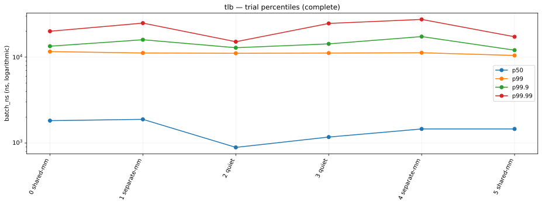
Per-trial percentiles; red bands mark non-ok trials. Check report.md for underpowered tails. PNG · SVG
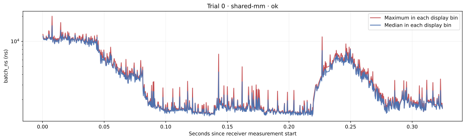
Spike-preserving display bins; raw samples are retained. Remote RTT uses the sender's clock. PNG · SVG
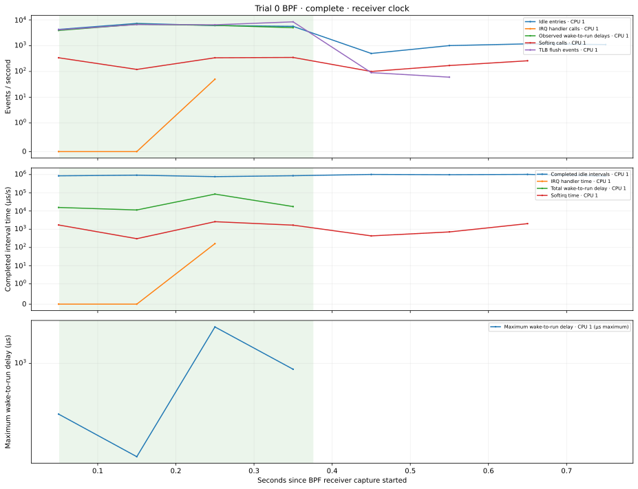
Receiver-side kernel events. Green span marks a local memory/RCU measurement; remote RTT is not clock-aligned. Times can overlap. PNG · SVG
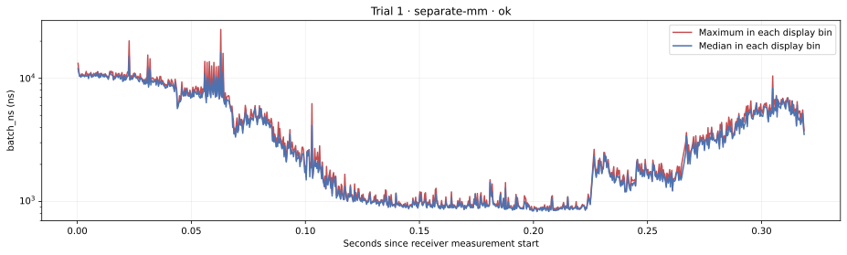
Spike-preserving display bins; raw samples are retained. Remote RTT uses the sender's clock. PNG · SVG
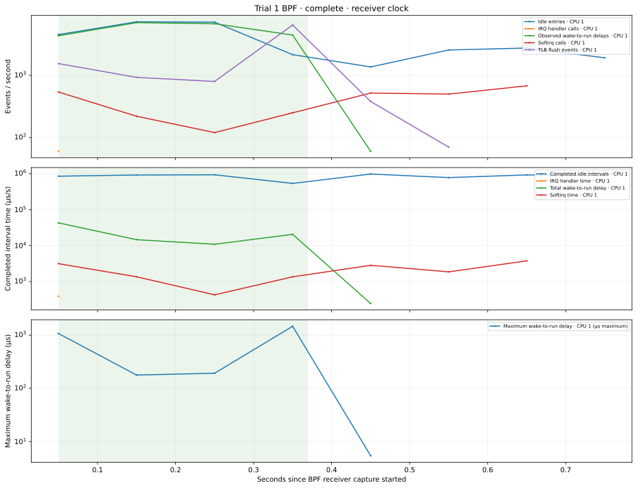
Receiver-side kernel events. Green span marks a local memory/RCU measurement; remote RTT is not clock-aligned. Times can overlap. PNG · SVG
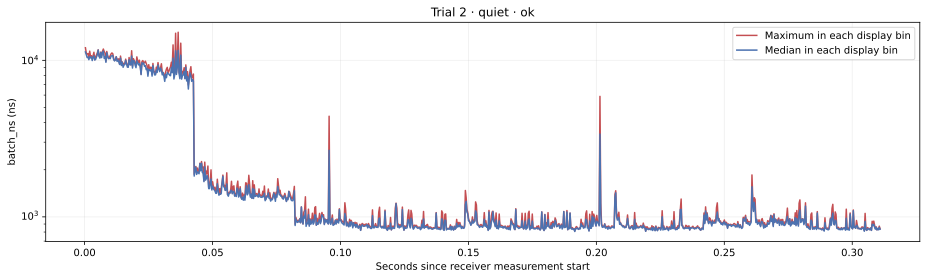
Spike-preserving display bins; raw samples are retained. Remote RTT uses the sender's clock. PNG · SVG
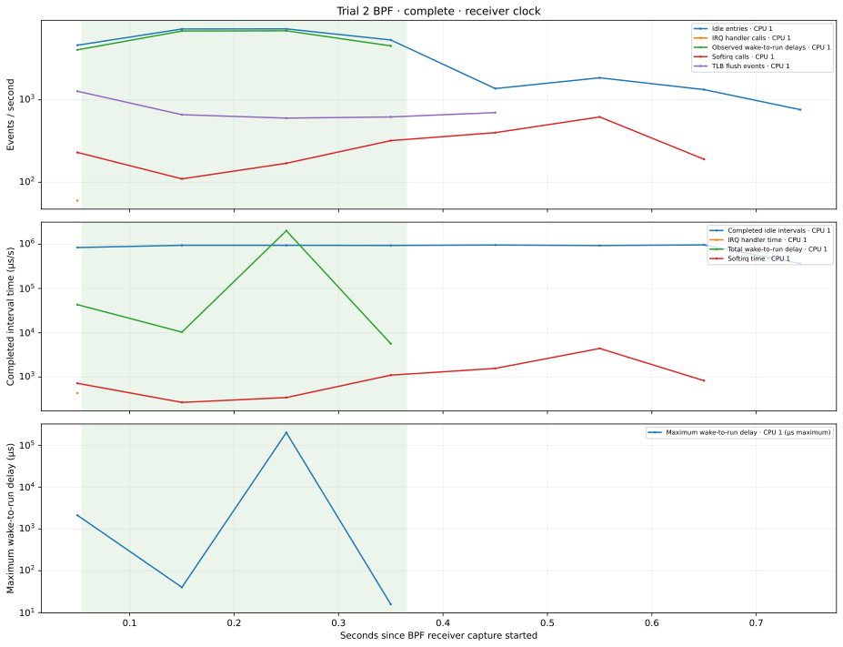
Receiver-side kernel events. Green span marks a local memory/RCU measurement; remote RTT is not clock-aligned. Times can overlap. PNG · SVG
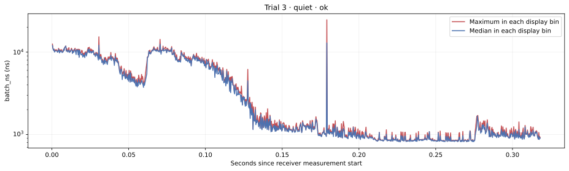
Spike-preserving display bins; raw samples are retained. Remote RTT uses the sender's clock. PNG · SVG
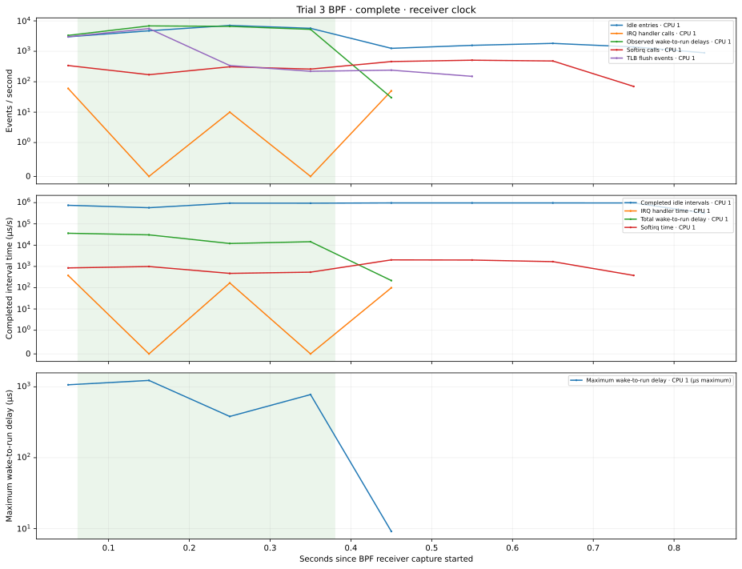
Receiver-side kernel events. Green span marks a local memory/RCU measurement; remote RTT is not clock-aligned. Times can overlap. PNG · SVG
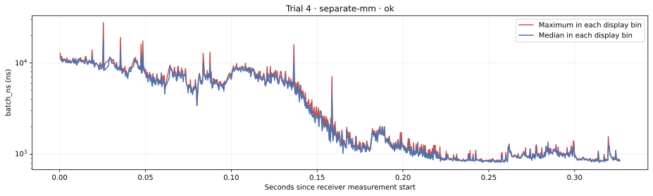
Spike-preserving display bins; raw samples are retained. Remote RTT uses the sender's clock. PNG · SVG
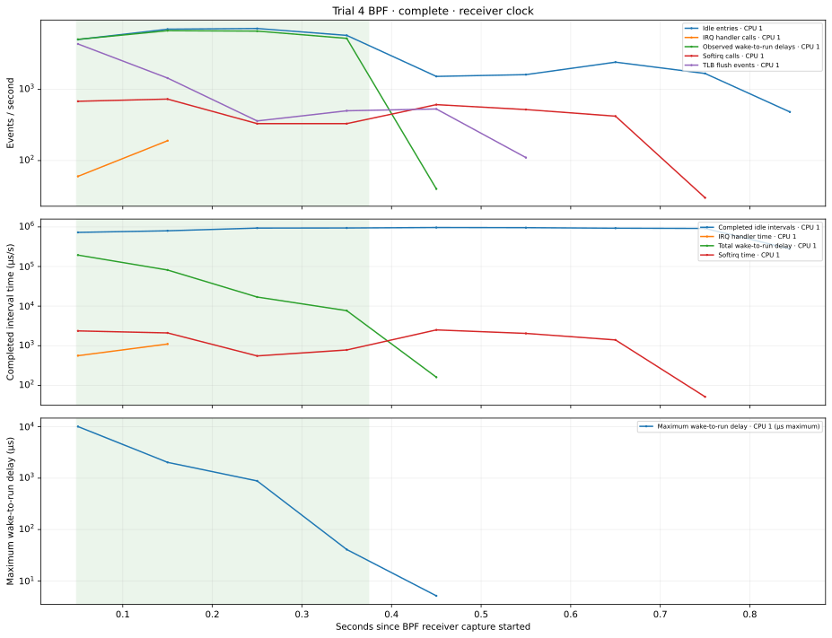
Receiver-side kernel events. Green span marks a local memory/RCU measurement; remote RTT is not clock-aligned. Times can overlap. PNG · SVG
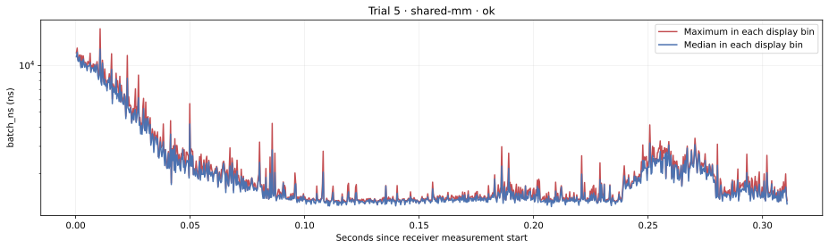
Spike-preserving display bins; raw samples are retained. Remote RTT uses the sender's clock. PNG · SVG
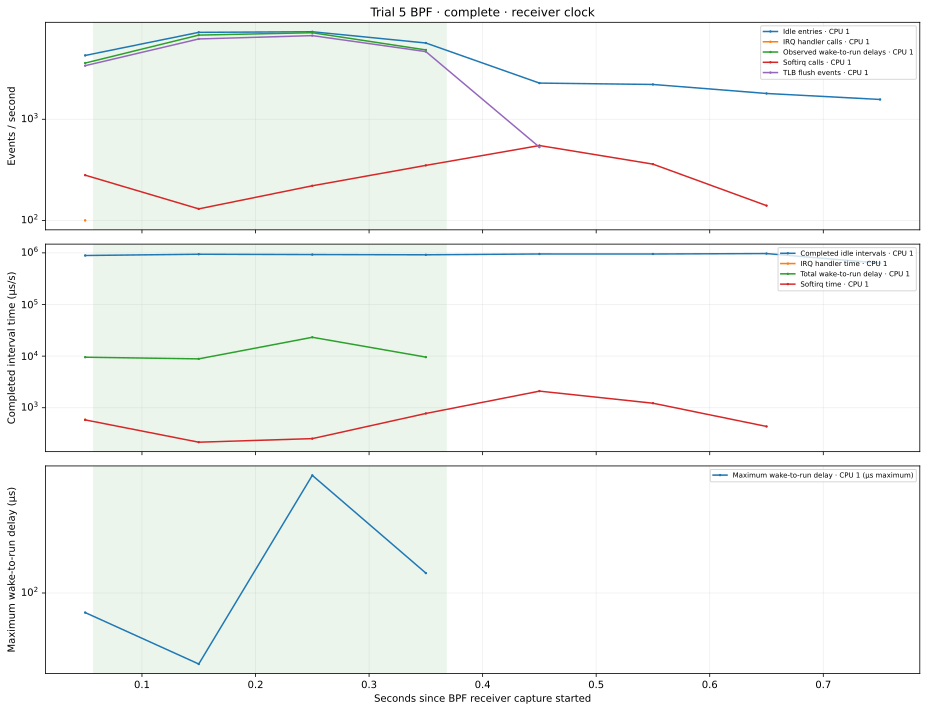
Receiver-side kernel events. Green span marks a local memory/RCU measurement; remote RTT is not clock-aligned. Times can overlap. PNG · SVG